Le catalogue de votre boutique, sur papier et en ligne, à vos prix, en cinq étapes. Vous choisissez les produits et la mise en page ; la marque fournit la couverture et les pages fixes ; le PDF sort prêt pour l’imprimeur, pour votre imprimante ou pour WhatsApp.
Les cinq étapes de l’assistant
1
Catalogue
Je pars d’un catalogue reçu de la marque, d’un des miens, ou d’un nouveau : titre, nombre de pages, gammes de départ.
2
Gammes
Je coche mes produits, catégorie par catégorie, aux prix de mon webshop, et mes promotions.
3
Présentation
Je règle chaque page : catégorie, mise en page, en-tête, gabarit ; le format et les langues.
4
Validation
Je relis ce qui s’imprimera : chaque point à voir est signalé, page par page.
5
Export PDF
J’imprime (imprimeur ou mon imprimante) et je diffuse : QR code, PDF léger, affiche.
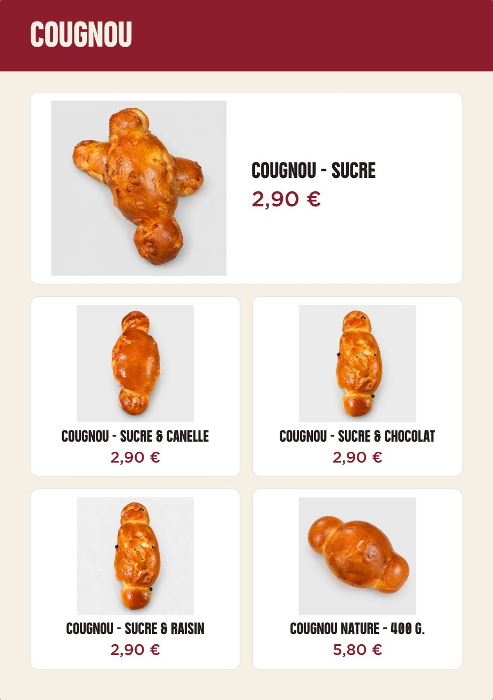
Une page composée à l’étape 3 : la catégorie Cougnou, mise en page « 1 vedette + 4 », bandeau illustré.
Les règles du catalogue
De 8 à 16 pages, toujours par 2.
Quatre pages sont celles de la marque : la couverture, la page 2, l’avant-dernière et la dernière (commande en ligne, adresse, horaires et QR de ma boutique). Elles ne se modifient pas.
Seuls les produits vendus sur MON webshop, aux prix de MON webshop (pas ceux du comptoir).
Format A5 ou A4 ; en français, en néerlandais, ou les deux.
Une catégorie a sa page : une catégorie ajoutée reçoit la sienne.
Comment lire ce livret : les pastilles numérotées posées sur chaque capture renvoient à la liste qui la suit. Les captures viennent du dashboard de la boutique Atelier By - Halle.
L’Atelier By · Dashboard magasin › Mon catalogue · état du 17 novembre 2026
Créer mon catalogue Ouvrir le module
Avant de commencer
Ouvrir « Mon catalogue »
Le module s’ouvre sur la liste de vos catalogues. Chaque ligne dit d’où vient le catalogue, son état, son nombre de pages et ce qu’il reste à faire.
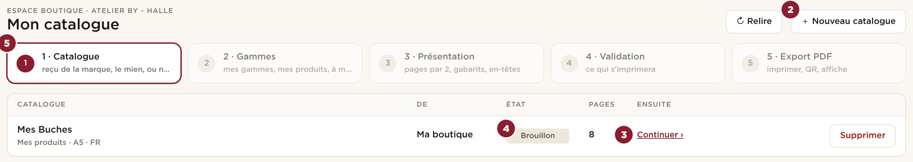
La liste de mes catalogues et les cinq étapes de l’assistant.
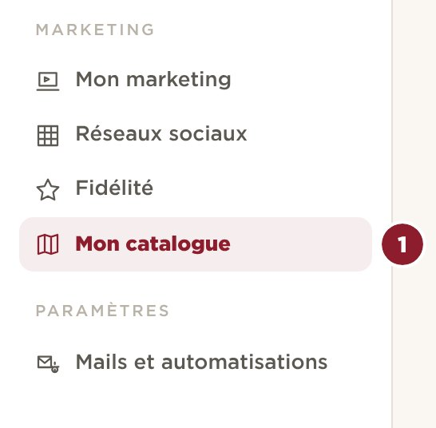
Le menu de gauche.
1
Dans le menu de gauche, rubrique Marketing : Mon catalogue.
2
＋ Nouveau catalogue ouvre l’assistant sur un catalogue vierge (page suivante). ↻ Relire recharge la liste.
3
La colonne « Ensuite » reprend un catalogue là où il en est : Continuer › pour un brouillon, Vérifier et imprimer › quand le PDF est prêt, Diffuser › une fois imprimé.
4
L’état : Brouillon, PDF prêt, Imprimé · 250 ex. Supprimer (à droite) retire le catalogue, après confirmation ; il disparaît aussi du Marketing.
5
Les cinq étapes de l’assistant. Une étape faite porte une coche : un clic y revient.
Les états d’un catalogue
État
Ce qu’il veut dire
Le lien « Ensuite »
Brouillon
en cours : produits et pages à régler
Continuer › (étape 2)
PDF prêt
validé, ou un PDF a déjà été téléchargé
Vérifier et imprimer › (étape 4)
Imprimé · 250 ex.
la quantité imprimée est notée
Diffuser › (étape 5)
À regarder
un catalogue de la marque, reçu, pas encore ouvert
Le feuilleter › (étape 4)
Pris tel quel
un catalogue de la marque que j’ai pris
Imprimer › (étape 5)
Un catalogue préparé par la marque
Quand la marque prépare un catalogue pour votre boutique, une carte Nouveau · de la marque s’affiche au-dessus de la liste, avec ses premières pages. Il est déjà à vos prix, avec votre adresse, vos horaires et votre QR ; les produits que votre webshop ne vend pas en sont retirés.
Le feuilleter : voir toutes ses pages.
Le prendre tel quel › : il devient le vôtre à vérifier, imprimer et diffuser. Ses gammes et sa mise en page restent celles de la marque : les étapes 2 et 3 sont verrouillées (cadenas).
L’adapter à ma boutique : une copie à vous, que vous changez comme vous voulez. La marque ne la modifie plus : ses mises à jour ne vous arrivent plus.
La boutique de Halle n’avait pas de catalogue de la marque le jour des captures : cette carte n’est pas illustrée.
L’Atelier By · Dashboard magasin › Mon catalogue · état du 17 novembre 2026
Créer mon catalogue Étape 1 · Catalogue
Étape 1 · Catalogue
1
Nouveau catalogue : le point de départ
Après ＋ Nouveau catalogue, l’étape 1 est faite (coche verte) et l’assistant montre le point de départ : un titre, un nombre de pages, et les gammes d’où partent vos produits.
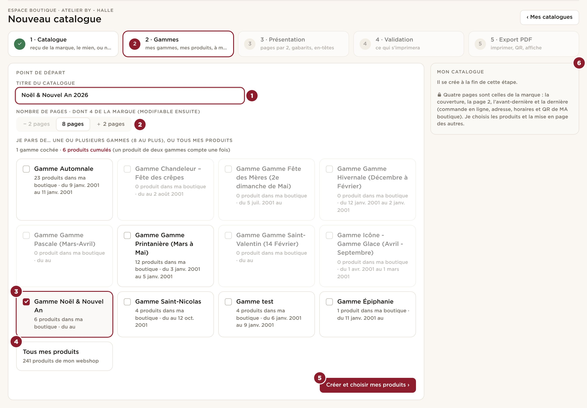
1
Le titre du catalogue. Il se propose tout seul d’après les gammes cochées ; vous pouvez le réécrire (ici « Noël & Nouvel An 2026 »).
2
Le nombre de pages, dont 4 de la marque : − 2 pages · ＋ 2 pages. Il se change encore à l’étape 3.
3
Je pars d’une ou de plusieurs gammes (8 au plus) : je les coche. Chaque carte dit combien de produits de ma boutique elle compte ; une gamme sans produit chez moi est grisée. Le total s’affiche au-dessus (un produit de deux gammes compte une fois).
4
… ou de Tous mes produits : tout le webshop de la boutique, que je trierai à l’étape suivante.
5
Créer et choisir mes produits › crée le catalogue (état Brouillon) et passe aux produits.
6
Le résumé du catalogue et le rappel des quatre pages de la marque. Avant la création : « Il se crée à la fin de cette étape ».
Bon à savoir
Le point de départ ne change plus une fois le catalogue créé ; les produits, eux, se choisissent librement à l’étape 2. Pour partir d’autres gammes, créez un nouveau catalogue.
L’Atelier By · Dashboard magasin › Mon catalogue · état du 17 novembre 2026
Créer mon catalogue Étape 2 · Gammes
Étape 2 · Gammes
2
Mes produits, à mes prix
Tous les produits du webshop de la boutique, rangés par catégorie. Un interrupteur allumé (bordeaux) met le produit au catalogue.
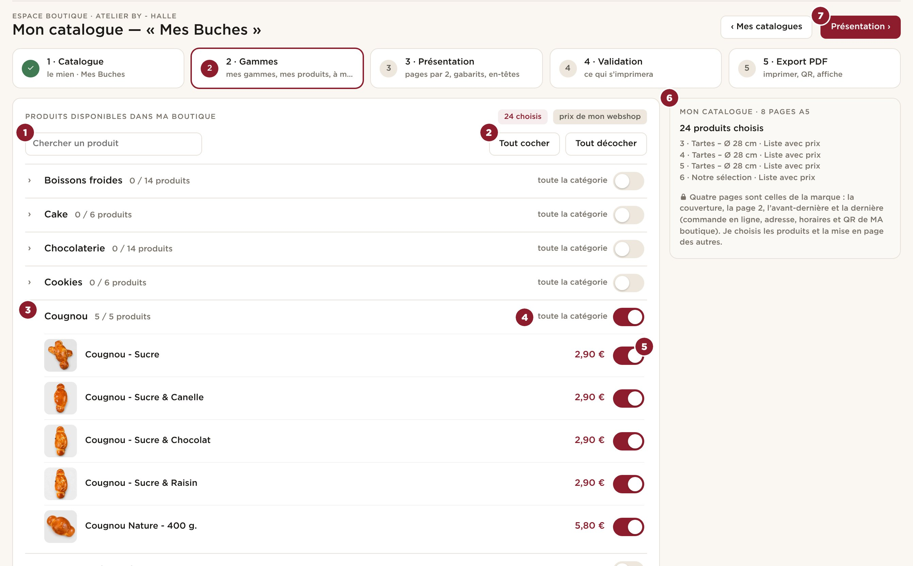
1
Chercher un produit (nom français ou néerlandais) : les catégories qui ont un résultat se déplient.
2
Tout cocher · Tout décocher : sur les produits affichés (ceux de la recherche, s’il y en a une).
3
Une catégorie : un clic sur son nom la déplie ou la replie. « 5 / 5 produits » : cochés sur le total.
4
toute la catégorie coche ou décoche tous ses produits d’un coup.
5
Un produit : son interrupteur, sa photo, son prix du webshop (« sans prix » s’il n’en a pas).
6
Le résumé : produits choisis, et ce que porte chaque page.
7
Présentation › enregistre les choix et passe à l’étape 3.
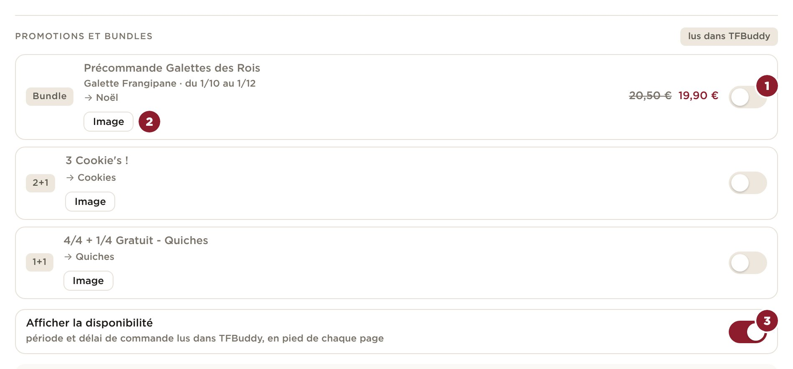
En bas de la même page : les promotions de la boutique (trois montrées ici).
Promotions et bundles · lus dans TFBuddy
1
L’interrupteur met l’offre au catalogue, avec son badge (2+1, Bundle…) et son prix. Une offre qui touche un produit coché l’est d’office.
2
Image : une image de la médiathèque à la place des photos des produits dans la vignette.
3
Afficher la disponibilité : période et délai de commande, en pied de chaque page.
Bon à savoir
Une catégorie ajoutée reçoit sa page (une page vide s’il y en a une, sinon 2 pages de plus, 16 au plus) ; une catégorie retirée laisse sa page vide. Un produit que la boutique ne vend plus sort du catalogue à l’enregistrement.
L’Atelier By · Dashboard magasin › Mon catalogue · état du 17 novembre 2026
Créer mon catalogue Étape 3 · Présentation
Étape 3 · Présentation
3
Mes pages : une catégorie, une mise en page
Les pages dans l’ordre du catalogue. Celles de la marque sont fixes ; les autres se règlent une à une, et leur aperçu suit chaque réglage.
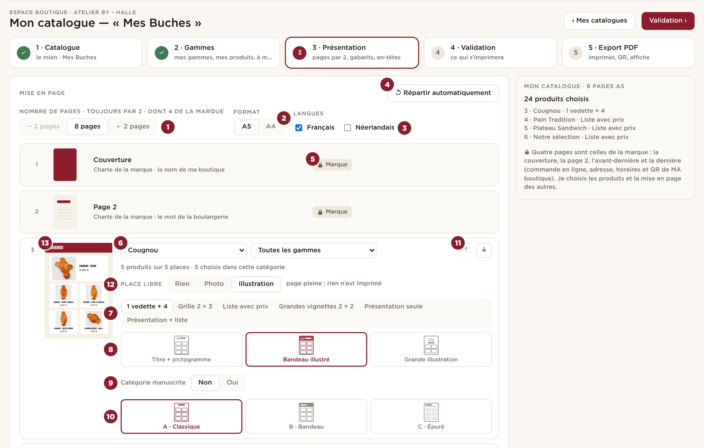
1
Le nombre de pages, toujours par 2. Réduire est refusé si une page à retirer porte des produits : le dashboard propose alors de répartir sur moins de pages.
2
Le format : A5 ou A4.
3
Les langues : français, néerlandais, ou les deux.
4
↺ Répartir automatiquement refait toute la répartition des produits sur les pages (vos réglages de pages sont remplacés).
5
Les pages de la marque (cadenas) : couverture, page 2, avant-dernière, dernière.
6
La catégorie de la page, ou « Notre sélection » (les produits qui restent), et sa gamme. Dessous : produits placés sur places disponibles.
7
La mise en page : six choix (page suivante).
8
L’en-tête : titre et pictogramme, bandeau illustré ou grande illustration.
9
Catégorie manuscrite : son nom en lettres manuscrites, sous celui de la gamme.
10
Le gabarit : A Classique, B Bandeau, C Épuré.
11
↑↓ déplacent la page.
12
Place libre, quand une rangée reste vide : rien, une photo de la médiathèque, ou l’illustration de la gamme.
13
L’aperçu de la page. Un clic l’agrandit, avec les autres pages de la même catégorie.
Les réglages s’enregistrent en passant à Validation › ; d’ici là, « modifications non enregistrées » s’affiche au bas de la page.
L’Atelier By · Dashboard magasin › Mon catalogue · état du 17 novembre 2026
Créer mon catalogue Étape 3 · Les choix d’une page
Étape 3 · Présentation (suite)
3
Les choix d’une page
Ce que chaque bouton de l’étape 3 produit sur le papier.
Mises en page
Mise en page
Ce que porte la page
Produits
1 vedette + 4
un produit en grand, quatre plus petits
5
Grille 2 × 3
six vignettes de même taille
6
Liste avec prix
une liste, photo, nom et prix sur chaque ligne
12
Grandes vignettes 2 × 2
quatre grandes vignettes
4
Présentation seule
la gamme : son illustration, son nom et un texte (400 caractères au plus, un par langue)
0
Présentation + liste
la gamme et ses premiers produits, avec leurs prix
8
En-têtes · pages de produits
Titre + pictogramme
le titre et un petit pictogramme
Bandeau illustré
bandeau de couleur, illustration en blanc
Grande illustration
grande illustration en haut, puis le titre
L’illustration est le dessin de la famille de la catégorie, sinon celui de la gamme.
Gabarits A · B · C
Pages de produits
Présentation
A
Classique : fond papier, titre centré
Illustration : dessin au centre
B
Bandeau : bandeau de couleur, titre à gauche
Pleine couleur : dessin en blanc
C
Épuré : fond blanc, titre à gauche
Photo pleine : grande image en haut
Le bas de l’étape 3
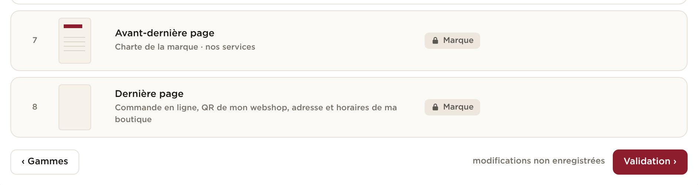
Les deux dernières pages sont celles de la marque : « nos services », puis la commande en ligne, le QR du webshop, l’adresse et les horaires de la boutique. Sous les pages, deux messages peuvent apparaître :
… n’a pas de page à elle : une catégorie choisie n’a pas de page ; ses produits vont en « Notre sélection » s’il y en a une. Choisissez sa catégorie sur une page, ou ajoutez 2 pages.
N produits choisis sans place dans les pages : ajoutez 2 pages, prenez une mise en page plus dense (Liste avec prix : 12 produits), une page « Notre sélection », ou ↺ Répartir automatiquement.
L’Atelier By · Dashboard magasin › Mon catalogue · état du 17 novembre 2026
Créer mon catalogue Étape 4 · Validation
Étape 4 · Validation
4
Je vérifie avant d’imprimer
Le catalogue est composé tel qu’il s’imprimera, et vérifié point par point. À gauche ce qu’il faut voir, à droite les pages.
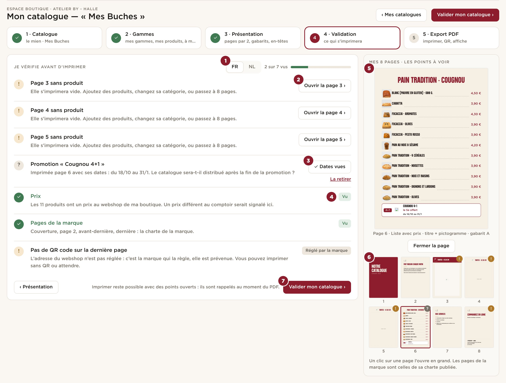
1
La langue vérifiée, FR ou NL. La jauge compte les points vus.
2
! À corriger : ici une page sans produit, qui s’imprimerait vide. Le bouton ouvre la page ; corrigez-la à l’étape 3.
3
? À confirmer : une promotion imprimée avec ses dates. ✓ Dates vues si elle sera encore valable, La retirer sinon.
4
✓ Vérifié : rien à faire (les prix, les pages de la marque).
5
La page ouverte en grand, telle qu’elle s’imprimera.
6
Toutes les pages, avec leurs points (! ou ?). Un clic ouvre la page.
7
Valider mon catalogue › : le catalogue passe en « PDF prêt » et l’assistant ouvre l’export.
Bon à savoir
Imprimer reste possible avec des points ouverts : ils sont rappelés au moment du PDF.
Réglé par la marque : rien à faire de votre côté. Par exemple le QR de la dernière page, quand l’adresse du webshop n’est pas encore réglée : la marque est prévenue ; vous imprimez sans QR, ou vous attendez.
La capture montre un brouillon : ses pages 3 à 5 n’ont pas encore de produits, d’où les trois points « ! ».
L’Atelier By · Dashboard magasin › Mon catalogue · état du 17 novembre 2026
Créer mon catalogue Étape 5 · Export PDF
Étape 5 · Export PDF
5
J’imprime mon catalogue
Deux façons d’imprimer, un fichier à télécharger, et la quantité imprimée à noter.
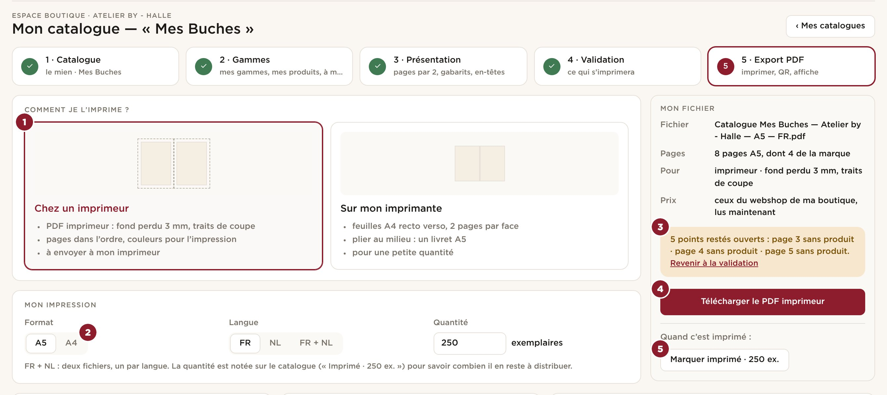
1
Comment je l’imprime ? Chez un imprimeur : PDF imprimeur, fond perdu de 3 mm et traits de coupe, à envoyer à l’imprimeur. Sur mon imprimante : feuilles A4 recto verso, deux pages par face, à plier au milieu en livret A5 ; pour une petite quantité (catalogue A5 seulement : en A4, le PDF garde une page par feuille).
2
Mon impression : le format (A5 ou A4), la langue (FR, NL, ou FR + NL : deux fichiers, un par langue), la quantité d’exemplaires.
3
Les points restés ouverts à la validation sont rappelés ici ; Revenir à la validation pour les régler.
4
Télécharger le PDF imprimeur (ou Télécharger le livret à imprimer) : le PDF s’ouvre dans un nouvel onglet, aux prix du webshop lus à ce moment. Choisissez « Enregistrer au format PDF ». Le lien vaut 48 heures.
5
Une fois imprimé : Marquer imprimé · 250 ex. note la quantité sur le catalogue (« Imprimé · 250 ex. »), pour savoir combien il en reste à distribuer.
Chez un imprimeur ou sur mon imprimante ?
Chez un imprimeur
Sur mon imprimante
Le fichier
PDF imprimeur : pages dans l’ordre, fond perdu de 3 mm, traits de coupe
livret : feuilles A4 recto verso, deux pages par face
Ensuite
je l’envoie à mon imprimeur
je plie les feuilles au milieu : un livret A5
Format
A5 ou A4
A5 (en A4, une page par feuille, sans pliage)
Pour
l’impression professionnelle, en couleurs d’imprimerie
une petite quantité
Bon à savoir
Le navigateur doit autoriser les nouvelles fenêtres du dashboard : le PDF s’ouvre dans un onglet (un par langue).
Marquer imprimé fige les pages de la marque telles qu’elles ont été imprimées.
L’Atelier By · Dashboard magasin › Mon catalogue · état du 17 novembre 2026
Créer mon catalogue Étape 5 · Diffuser
Étape 5 · Export PDF (suite)
5
Je diffuse mon catalogue
Sous l’impression, la même étape donne le catalogue en ligne : un QR code, un PDF à partager et une affiche pour le magasin.
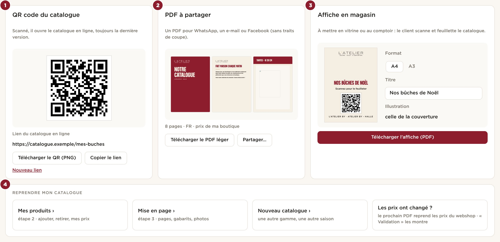
Le lien et le QR de la capture sont des exemples : le vôtre se crée à l’ouverture de l’étape 5.
1
QR code du catalogue : scanné, il ouvre le catalogue en ligne, toujours dans sa dernière version. Télécharger le QR (PNG) · Copier le lien. Nouveau lien remplace l’ancien : les QR déjà imprimés (affiches, catalogues distribués) ne mènent plus au catalogue.
2
PDF à partager : un PDF léger, sans traits de coupe, pour WhatsApp, un e-mail ou Facebook. Partager… ouvre le partage du téléphone (sinon, le lien est copié).
3
Affiche en magasin, pour la vitrine ou le comptoir : A4 ou A3, un titre à vous (ici « Nos bûches de Noël »), l’illustration de la couverture et le QR. Le client scanne et feuillette le catalogue.
4
Reprendre mon catalogue : revenir aux produits (étape 2), à la mise en page (étape 3), en commencer un nouveau, ou revérifier quand les prix ont changé.
Récapitulatif · à cocher
Marketing › Mon catalogue › ＋ Nouveau catalogue
Titre, nombre de pages, gammes de départ › Créer et choisir mes produits ›
Cocher mes produits et mes promotions › Présentation ›
Une catégorie par page ; mise en page, en-tête, gabarit ; format et langues › Validation ›
Corriger les « ! », confirmer les « ? » › Valider mon catalogue ›
Imprimeur ou mon imprimante › Télécharger le PDF › imprimer › Marquer imprimé
Diffuser : QR code, PDF léger, affiche en magasin
L’Atelier By · Dashboard magasin › Mon catalogue · état du 17 novembre 2026
Créer mon catalogue Questions fréquentes
En pratique
Questions fréquentes
Les cas que l’on rencontre le plus souvent, et ce que le dashboard répond.
Les prix ont changé au webshop.
Rien à refaire : chaque PDF reprend les prix du webshop au moment où il est téléchargé. L’étape 4 « Validation » montre les prix qui seront imprimés.
Un produit n’apparaît pas à l’étape 2.
Seuls les produits en vente sur le webshop de la boutique sont proposés. Un produit « sans prix » n’a pas de prix au webshop : donnez-lui d’abord son prix au webshop.
Le prix du comptoir est différent.
Le catalogue prend toujours le prix du webshop. Au survol du prix, l’étape 2 montre le prix du comptoir quand il diffère.
« − 2 pages » est refusé.
Une des pages à retirer porte des produits. Le dashboard propose « Répartir automatiquement sur N pages » : les produits sont redistribués sur moins de pages.
Une page s’imprimerait vide.
L’étape 4 la signale (« Page N sans produit »). À l’étape 3, donnez-lui une catégorie qui a des produits cochés, passez à moins de pages, ou répartissez automatiquement.
Une promotion finit avant la distribution.
À l’étape 4, sur le point « Promotion … », choisissez « La retirer » : elle ne s’imprime plus. On peut aussi la décocher à l’étape 2.
Mes anciens QR ne marchent plus.
Le lien a été remplacé par « Nouveau lien » à l’étape 5 : l’ancien ne mène plus au catalogue. Réimprimez l’affiche et les QR avec le nouveau.
Le PDF ne s’ouvre pas.
Autorisez les fenêtres (pop-ups) du dashboard dans le navigateur, puis cliquez de nouveau. Un PDF ouvert vaut 48 heures.
Je veux changer un catalogue de la marque.
« L’adapter à ma boutique » en fait une copie à vous, modifiable. La marque ne la met plus à jour.
Le dashboard affiche un message rouge.
C’est le refus du Marketing, tel quel, avec le produit ou la page en cause. Corrigez le point indiqué, puis recommencez le geste.
Besoin d’aide ?
Une question sur votre catalogue, un produit ou un prix qui ne va pas : la vignette Demande au bureau, en haut du dashboard, transmet votre demande au bureau ; la réponse revient au même endroit.
L’Atelier By · Dashboard magasin › Mon catalogue · état du 17 novembre 2026